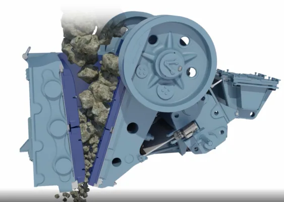
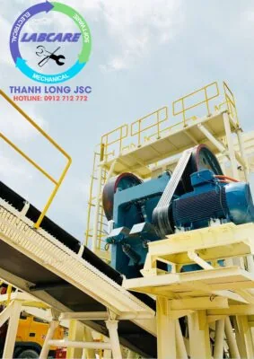

Hiện nay, việc lựa chọn máy nghiền phù hợp với tính chất cơ lý của vật liệu tại mỏ đá là một bài toán thú vị. Nhiều khách hàng lựa chọn máy kẹp hàm to để có thể nghiền được đá lớn, cũng có nhiều ý kiến rằng nổ mìn và làm nhỏ đá, và lựa chọn vật liệu phù hợp với máy nghiền nhỏ để tiết kiệm chi phí đầu tư. Bài viết sẻ thông tin và làm rõ về chủ đề này.
Chọn vật liệu đầu vào phù hợp với máy nghiền, cách sản xuất hiệu quả và tiết kiệm nhất
Máy nghiền hàm còn gọi là hàm nghiền, con heo, hộc hàm, đập hàm, … Là thiết bị nghiền hạng nặng trong dây chuyền nghiền đá xây dựng,. Khai thác khoáng sản, hoặc tái chế vật liệu, … Được áp dụng phổ biến trong việc hạ kích thước nguyên liệu. Từ kích cỡ lớn nhất đến cỡ nhỏ hơn, phù hợp cho các công đoạn nghiền tiếp theo. Thông thường máy nghiền hàm được áp dụng ở cấp nghiền thứ nhất, và nó có thế mạnh để xử lý các nguyên liệu có kích cỡ nhỏ hơn 2000 mm.

Nguyên lý hoạt động của máy nghiền hàm, vì sao phải lựa chọn vật liệu cho phù hợp
Máy nghiền hàm là dùng áp suất của lực ép để phá vỡ nguyên liệu. Năng lượng được cấp bởi mô tơ điện dẫn động. Tích lũy trong bánh đà của máy nghiền và ép vỡ nguyên liệu khi đến chu trình nghiền.
Khoảng thể tích giữa 2 má hàm làm việc, được gọi là khoang nghiền. Chuyển động của trục lệch tâm, sẽ làm má hàm động chuyển động về phía má hàm tĩnh của máy. Để làm thay đổi thể tích khoang nghiền, và việc thay đổi thể tích sẽ tạo ra áp suất nghiền.
Thông số kỹ thuật máy nghiền hàm
Thông thường máy nghiền hàm được áp dụng là nghiền cấp 1, có nghĩa là nghiền vật liệu lớn nhất trong dây chuyền nghiền. Kích thước của miệng máy nghiền hàm thường có các cỡ phổ biến quy đổi ra hệ mm như:. 500*750, 600*900. 750*1060, 900*1200. 1000*1200, 1200*1500, … Và máy nghiền hàm lớn nhất hiện nay, được sản xuất kích cỡ 1500*2000 là máy nghiền lớn nhất thị trường hiện nay.
Có thể xử lý vật liệu thô hơn và làm giảm chi phí đáng kể, cho nhu cầu nổ mìn và búa đục. An toàn là một trong những nguyên tắc chính, trong tất cả các thiết kế của máy kẹp hàm. Đó là vỏ bảo vệ composite nhẹ hơn, bền hơn an toàn hơn và dễ xử lý hơn. Các công cụ nâng được thiết kế đặc biệt, giúp bảo trì máy 1 cách dễ dàng và an toàn cho quá trình vận hành.
Đá to, vật liệu đầu vào lớn có ảnh hưởng đến năng suất của dây chuyền hay không?
Năng suất nghiền có thể khác nhau, tùy thuộc vào phương pháp cấp liệu. Và các đặc tính của vật liệu như phân cấp, mật độ khối lượng lớn. Độ ẩm, hàm lượng đất sét và khả năng nghiền. Việc đo cài đặt khe xả của máy nghiền thay đổi, tùy thuộc vào cấu hình hàm đang được sử dụng. Và có tác động đến công suất của máy nghiền, sự thay đổi sản phẩm.
Tương đương với cỡ miệng của hàm nghiền, cỡ nguyên liệu cấp vào lớn nhất sẽ được tính bằng 75% cỡ miệng. Do đó, nguyên liệu cỡ tối đa tương đương với hàm 750*1060 sẽ là <630mm.

Kích thước đá phù hợp với máy nghiền hàm, phương án nào tối ưu cho vật liệu sau nổ mìn
Thông thường, khe mở của cửa công tác máy nghiền hàm (CSS) được điều chỉnh trong khoảng 80-200mm. Theo đó nguyên liệu sau khi qua máy nghiền hàm, sẽ được đá có kích cỡ từ 0-350 mm. Phổ biến cỡ mở khoảng 120 mm, sẽ được đá dưới 250 mm để cấp vào các máy nghiền cấp 2.
Ngoài máy nghiền hàm sơ cấp, còn 1 loại máy nghiền hàm thứ cấp, dùng để áp dụng cho cấp nghiền thứ 2. Thông thường, cỡ miệng của máy nghiền cấp 2 sẽ xử lý được đá dưới 210 mm, và cho ra các loại đá < 60 mm.
Tuy nhiên, phương án dùng máy nghiền hàm thứ cấp không còn phổ biến hiện nay, do các giới hạn về năng suất và biên dạng đá thành phẩm thoi dẹt rất nhiều, khiến cho cho chất lượng của đá thành phẩm bị giảm, dẫn tới sụt mác bê tông. Vì vậy các bê tông mác cao, không bao giờ sử dụng các sản phẩm đá lấy trực tiếp từ hàm nghiền thứ cấp.
Trong quá trình tư vấn phương án cho khách hàng. Chúng tôi cũng ghi nhận nhiều yêu cầu của khách hàng. Muốn dùng hàm nghiền lớn hơn 1 vài cỡ so với thiết kế, để giảm thiểu chi phí nổ mìn và chi phí xử lý đá bằng búa thủy lực cho nguyên liệu.
Lựa chọn máy nghiền hàm Thanh Long JSC
Đây là một ý tưởng hay, tuy nhiên cũng cần xem xét nhiều vấn đề liên quan đến phương án, Các yếu tố sau đây sẽ nâng cao năng lực máy nghiền và hiệu suất cũng như tác động rất nhiều đến báo giá dây chuyền nghiền đá:
- Lựa chọn đúng cỡ hàm.
- Phân cấp vật liệu đầu vào thích hợp.
- Tỷ lệ đá đầu vào được kiểm soát.
- Cấp liệu rung đủ công suất và kích thước .
- Khu vực xả máy nghiền đầy đủ.
- Băng tải liệu ra có kích thước đủ để tải công suất máy nghiền tối đa
(Hướng dẫn bảo trì và vận hành máy nghiền hàm)
Như vậy, máy nghiền hàm thường sử dụng để xử lý cho đá loãng nổ mìn để ra đá hộc cấp cho các máy nghiền cấp 2, và kích cỡ viên đá tối đa cấp liệu thường xuyên dưới 0.75 lần kích cỡ miệng hàm.
Công ty chuyên cung cấp máy nghiền đá giá tốt, báo giá chính hãng, phù hợp với vật liệu đầu vào tại các mỏ trên toàn quốc họ là ai ???
Công ty Thanh Long chuyên cung cấp dây chuyền máy nghiền đá, nghiền cát nhân tạo, vật tư trạm nghiền chính hãng với giá tốt nhất. Thanh Long JSC đã lắp đặt trên 25 trạm nghiền cát đá và sỏi sông. Nghiền than từ công suất 50 khối/h đến 750 khối/h. Hãy nhanh tay gọi cho chúng tôi theo sdt:. 091- 2712- 772, để được tư vấn giải pháp đầu tư tiết kiệm và hiệu quả nhất.